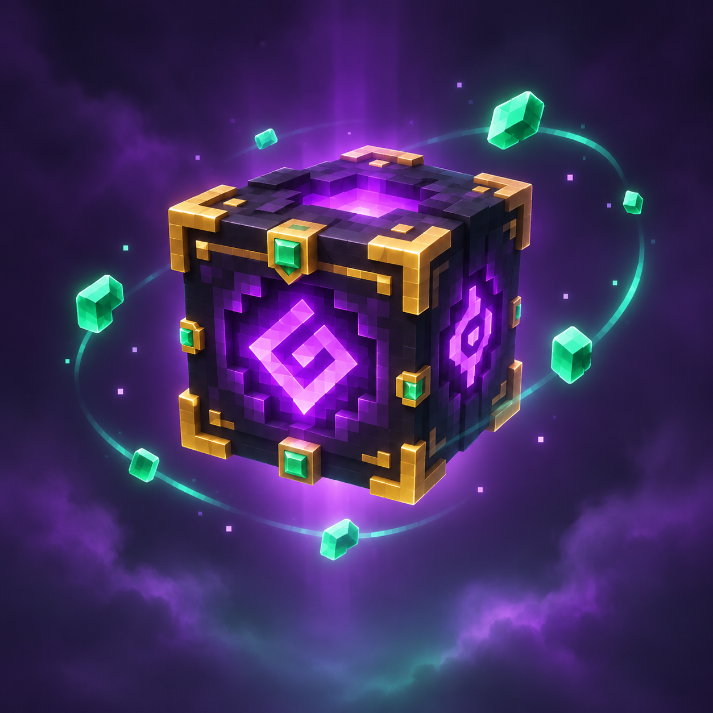

زمان دنیا JAVA + BEDROCK
صبحش کن!
زمان دنیای بازی را یکدفعه به روز تغییر میدهد.
/time set dayنیازمند دسترسی فرمان
از کدهای روزمره شروع کن، راهوچاهشان را یاد بگیر و با توکنهای روزانه قفل رازهای تازه را باز کن.
/time set day☼ طلوع فوری در دنیای تو
کد را بردار، کپی کن و در چت بازی امتحانش کن.
زمان دنیای بازی را یکدفعه به روز تغییر میدهد.
/time set dayآبوهوای دنیا را صاف و آفتابی میکند.
/weather clearحالت بازی خودت را به Creative تغییر بده.
/gamemode creative @sیک الماس به فهرست وسایلت اضافه میکند.
/give @s minecraft:diamond 1بازیکن فعلی را به مختصات نمونه میبرد.
/tp @s 100 64 100زمان دنیا را مستقیم به نیمهشب میبرد.
/time set midnightباران و رعدوبرق را فعال میکند.
/weather thunderپیدایش طبیعی بیشتر موجودات را متوقف میکند.
/gamerule doMobSpawning falseپس از مرگ، وسایل بازیکن در فهرست میمانند.
/gamerule keepInventory trueدرجه سختی را روی Peaceful میگذارد.
/difficulty peacefulبرای یک دقیقه در تاریکی بهتر میبینی.
/effect @s night_vision 60 0 trueبرای مدتی سرعت سقوطت را کم میکند.
/effect @s slow_falling 30 0 trueسه نان به وسایل بازیکن اضافه میکند.
/give @s bread 3یک بلوک خاک را از فهرست وسایلت حذف میکند.
/clear @s dirt -1 1بازیکن را نسبت به جای فعلی بالا میبرد.
/tp @s ~ ~10 ~مختصات نزدیکترین دژ را پیدا میکند.
/locate structure minecraft:strongholdبازیکن را به نقطهای تصادفی نزدیک مختصات فعلی میبرد.
/spreadplayers ~ ~ 2 6 @sنقطهٔ تولد بازیکن را در محل فعلی تنظیم میکند.
/spawnpoint @s ~ ~ ~نقطهٔ تولد پیشفرض دنیا را جابهجا میکند.
/setworldspawn ~ ~ ~بلوک زیر بازیکن را به شیشه تبدیل میکند.
/setblock ~ ~-1 ~ glassیک قاب کوچک و توخالی از شیشه میسازد.
/fill ~-2 ~ ~-2 ~2 ~ ~2 glass hollowحجم سهبعدی کوچکی را ده بلوک آنطرفتر کپی میکند.
/clone ~ ~ ~ ~2 ~2 ~2 ~10 ~ ~یک پیام را در گفتوگوی دنیا نمایش میدهد.
/say سلام دنیا!راهنمای دستورهایی را که در این دنیا در دسترساند نشان میدهد.
/helpهر راز یک فرمان تازه با توضیح کامل است. با ۱۰ توکن بازش کن؛ در دموی رایگان، حساب و توکنها روی سرور ذخیره میشوند اما ممکن است با توقف یا راهاندازی دوباره پاک شوند.

برای چند لحظه مثل باد حرکت کن.
/effect @s speed 60 1 true۱۰ ◆یک زامبی را کنار خودت احضار کن.
/summon minecraft:zombie ~ ~ ~۱۰ ◆چرخهی شبانهروز را متوقف کن.
/gamerule doDaylightCycle false۱۰ ◆برای چند ثانیه بهآرامی به هوا میروی.
/effect @s levitation 6 1 true۱۰ ◆یک رویداد ویژهٔ زامبی را اجرا میکند.
/summon zombie ~ ~ ~ ~ ~ minecraft:become_drowned۱۰ ◆صاعقه را نزدیک خودت فرود میآورد؛ خطر آتش و آسیب وجود دارد.
/summon lightning_bolt ~ ~ ~۱۰ ◆برای دو ثانیه دوربین را میلرزاند؛ گزینهٔ Allow Camera Shake باید روشن باشد.
/camerashake add @s 0.8 2 rotational۱۰ ◆بخش آدمک را از HUD مخفی میکند؛ برای بازگردانی، hide را با reset عوض کن.
/hud @s hide paperdoll۱۰ ◆تو را در محدودهای نزدیک محل فعلی جابهجا میکند.
/spreadplayers ~ ~ 2 6 @s۱۰ ◆اگر اسبی در فاصلهٔ پنج بلوکی باشد، بازیکن را سوار آن میکند.
/ride @s start_riding @e[type=minecraft:horse,r=5,c=1] teleport_rider۱۰ ◆هر روز که به سایت سر بزنی، یک توکن میگیری. با رسیدن به ۱۰ توکن میتونی یکی از فرمانهای مخفی را باز کنی.
پنجرهی چت را باز کن و علامت / را بنویس.
در Bedrock با Allow Cheats و در Java با Allow Commands. روشنکردن Cheats در Bedrock دستاوردهای همان دنیا را غیرفعال میکند.
کد را بچسبان و Enter بزن. اول در دنیای آزمایشی امتحان کن.